Budowa domów
Stawiamy domy jednorodzinne od ław fundamentowych po pokrycie dachu, zgodnie z projektem i sztuką budowlaną.
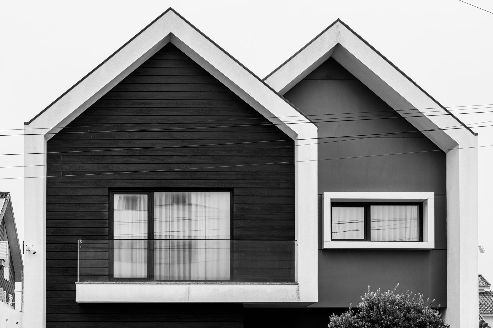
Budowa domów, stany surowe, remonty, wykończenia wnętrz oraz elewacje. Jeden wykonawca prowadzi całość, więc nie musisz spinać kilku ekip na własną rękę.
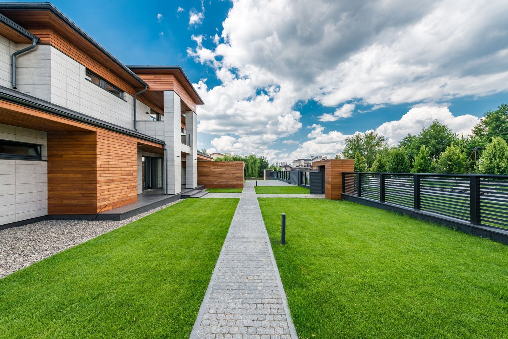
Piękny Dom to firma budowlana z Żyrardowa. Bierzemy na siebie całą budowę albo wchodzimy na wybrany etap, tam gdzie naprawdę jesteśmy potrzebni.
Pracujemy tak, jak sami chcielibyśmy mieć zrobione u siebie: ustalenia na początku, kosztorys przed startem i termin, którego się trzymamy. Bez dopisywania kosztów w trakcie roboty.
Budowa, wykończenie i elewacja. Możesz zlecić nam całość albo tylko ten etap, który Ci został.
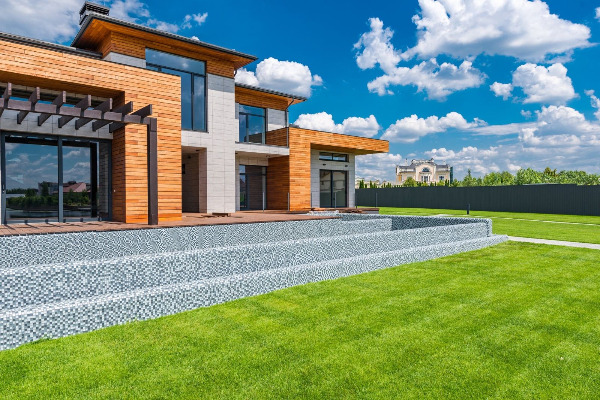
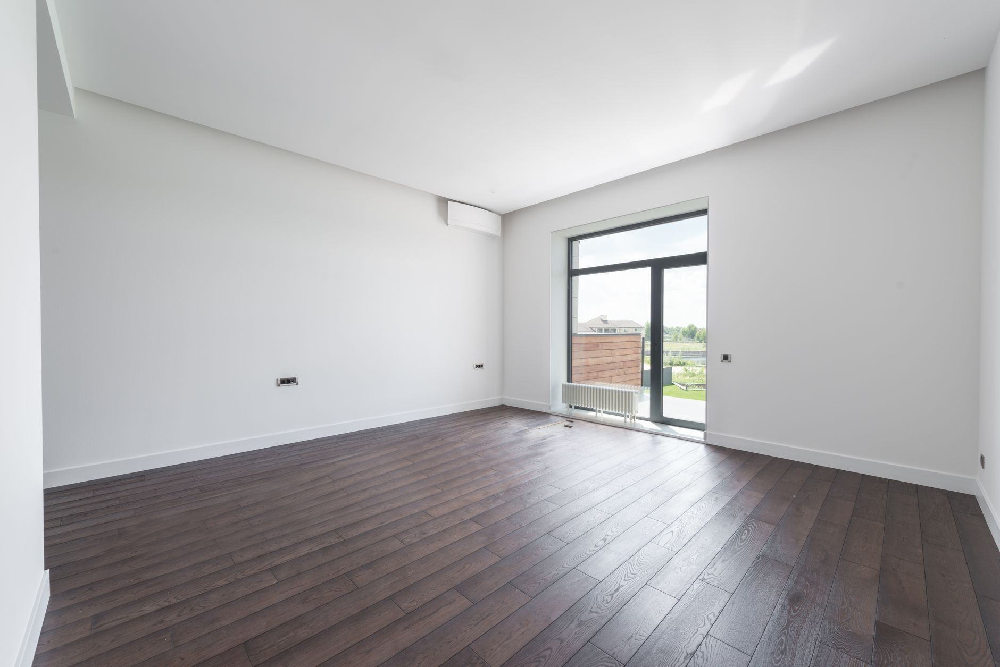

Stawiamy domy jednorodzinne od ław fundamentowych po pokrycie dachu, zgodnie z projektem i sztuką budowlaną.
Ściany, stropy i więźba doprowadzone do stanu surowego otwartego albo zamkniętego, z oknami i drzwiami.
Murowanie ścian, tynki maszynowe i ręczne, wylewki oraz zabudowy z płyt gipsowo-kartonowych.
Przebudowy domów i mieszkań: wyburzenia, nowe ściany działowe, instalacje, podłogi i sufity.
Gładzie, malowanie, panele, płytki i łazienki. Prowadzimy prace do końca, bez zostawiania drobiazgów na później.
Styropian albo wełna, siatka, tynk cienkowarstwowy, cokoły i obróbki wykończeniowe.

Cztery kroki i żadnych niespodzianek w połowie roboty. Cena oraz termin są ustalone, zanim wejdziemy na plac.
Przyjeżdżamy, oglądamy zakres i mówimy wprost, co da się zrobić oraz w jakiej kolejności. Bez opłat i bez zobowiązań.
Dostajesz rozpisany kosztorys i datę startu. Cena obowiązuje na ustalony zakres, a zmiany potwierdzamy wcześniej.
Pracujemy etapami i jesteśmy w stałym kontakcie. Zdjęcia z placu wysyłamy też wtedy, gdy nie możesz wpaść na budowę.
Przechodzimy z Tobą całość, poprawiamy drobiazgi od razu i dajemy gwarancję na robociznę.
Przekrój prac, jakie prowadzimy: od stanu surowego, przez elewacje, po wykończone wnętrza.

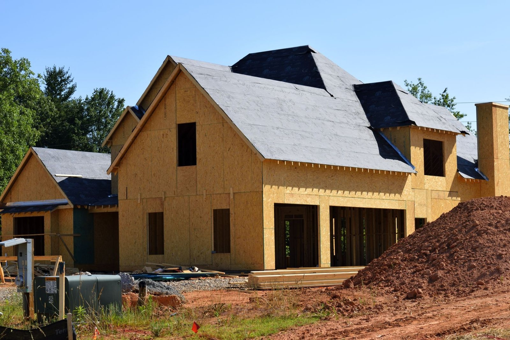
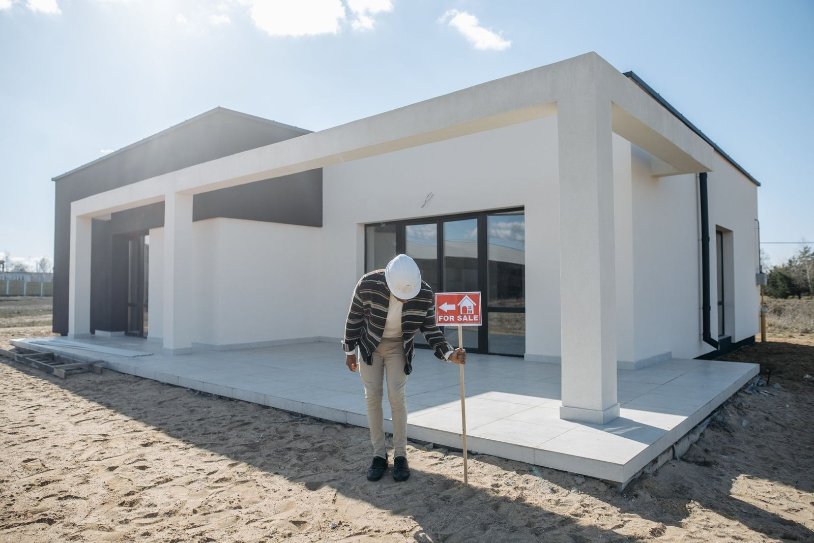
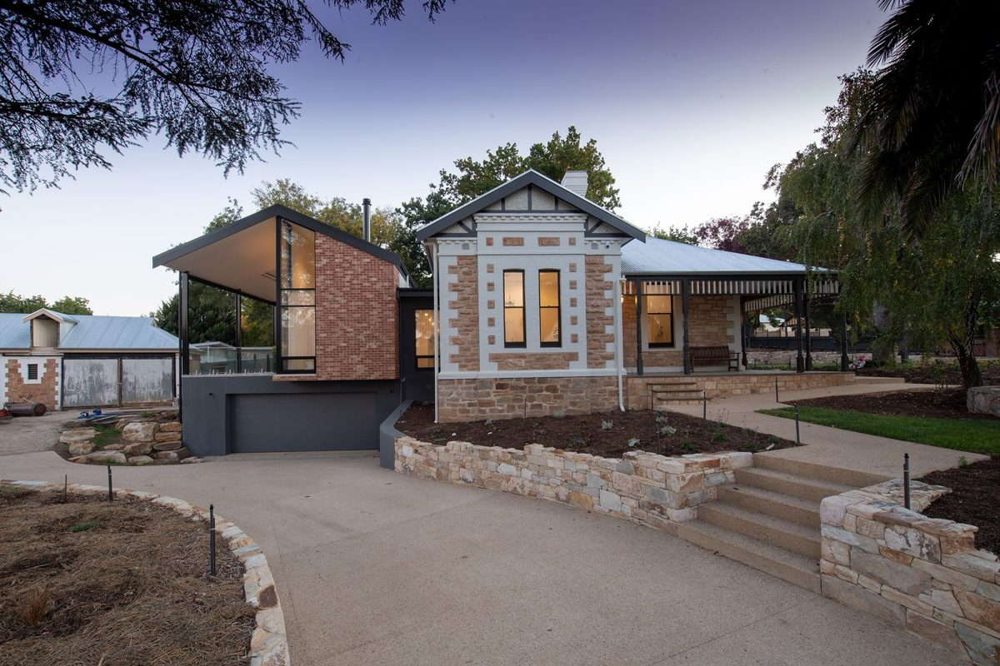
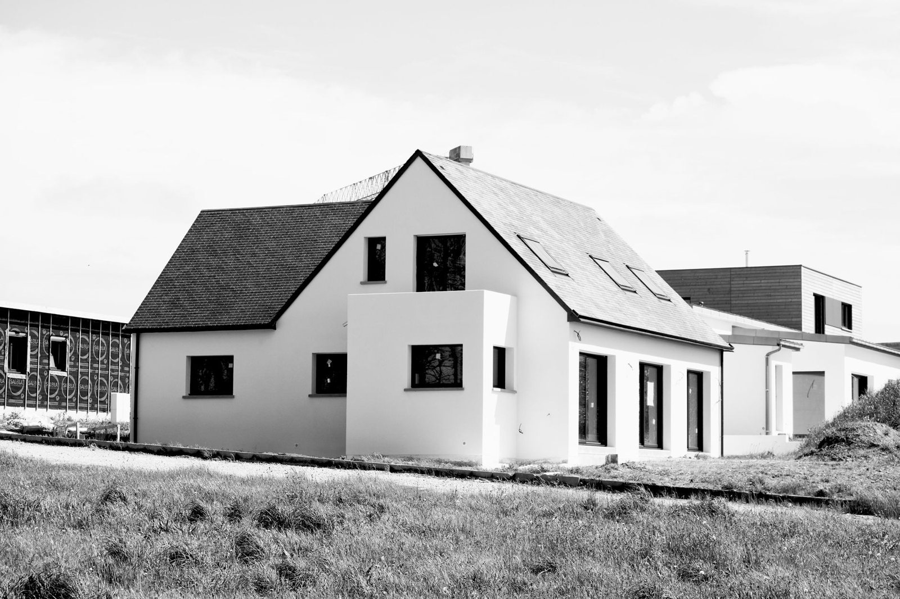
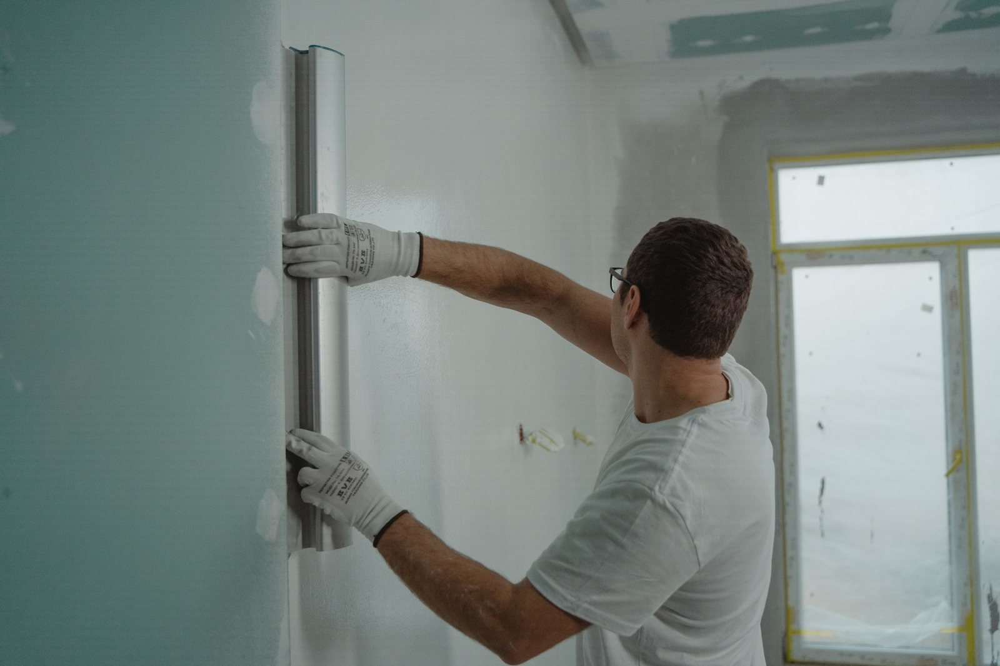

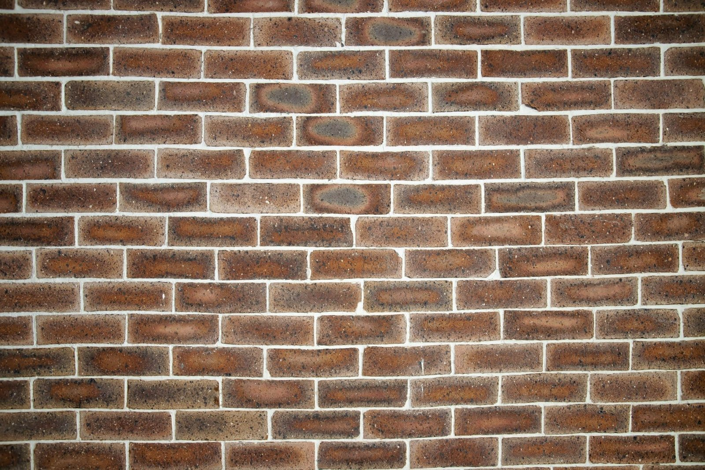

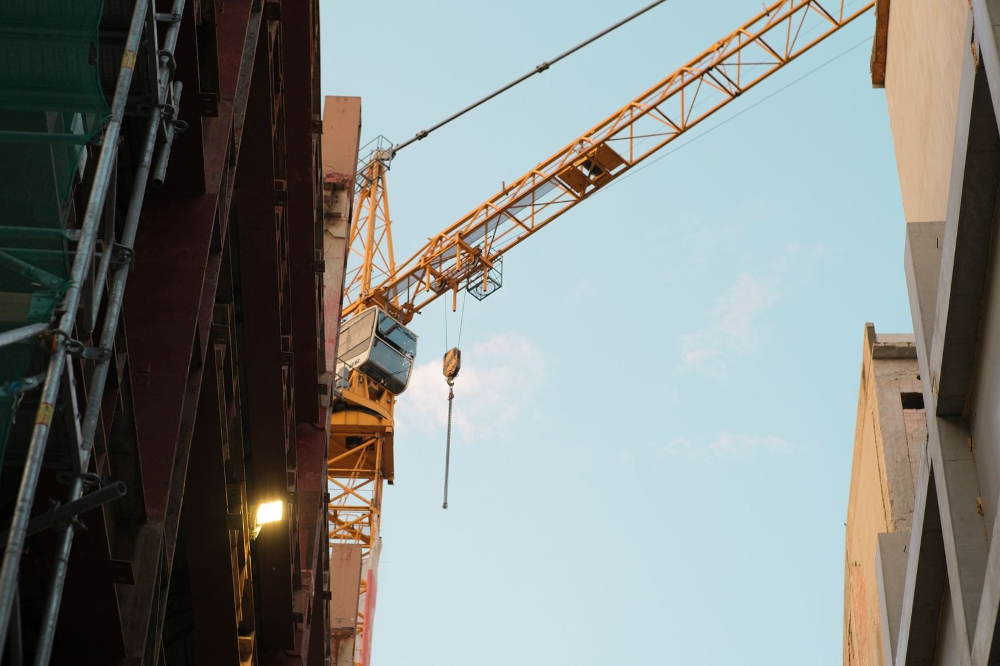
Ekipa weszła w umówionym terminie i doprowadziła dom do stanu surowego bez poślizgu. Kosztorys zgadzał się z tym, co ustaliliśmy na starcie.
Klientka z Żyrardowa
Robili u nas remont mieszkania od instalacji po malowanie. Codzienny kontakt, a każdą zmianę w zakresie ustalali z nami wcześniej.
Klient z okolic Żyrardowa
Docieplenie i elewacja wyszły równo, a cena nie urosła po drodze. Termin też się zgadzał, więc polecam dalej znajomym.
Inwestor spod Żyrardowa
Tu wstawimy prawdziwe opinie z wizytówki Google, gdy tylko podepniemy ją do strony.
Zadzwoń i opisz zakres prac. Umówimy oględziny w dogodnym terminie, obejrzymy budowę na miejscu i przygotujemy kosztorys. Bez opłat i bez zobowiązań.